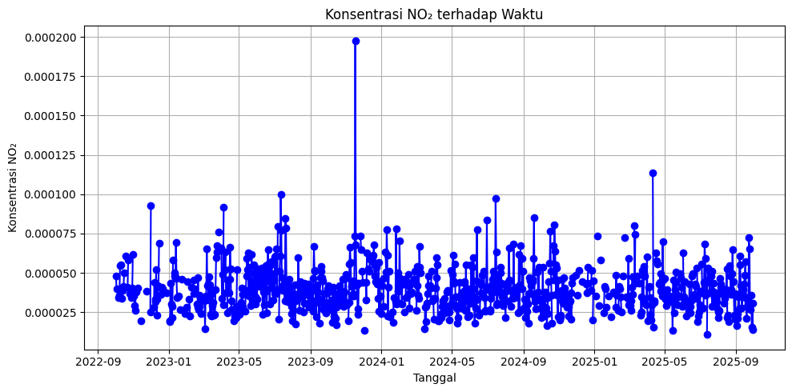

Eksplorasi Data (NO2 Sidoarjo)#
import pandas as pd
import matplotlib.pyplot as plt
import seaborn as sns
---------------------------------------------------------
ModuleNotFoundError Traceback (most recent call last)
Cell In[1], line 3
1 import pandas as pd
2 import matplotlib.pyplot as plt
----> 3 import seaborn as sns
ModuleNotFoundError: No module named 'seaborn'
Membaca Dataset#
df = pd.read_csv('data-copernicus/timeseries.csv')
df['date'] = pd.to_datetime(df['date'])
df = df.sort_values('date')
df
| date | feature_index | NO2 | |
|---|---|---|---|
| 4 | 2022-09-30 00:00:00+00:00 | 0 | NaN |
| 1 | 2022-10-01 00:00:00+00:00 | 0 | NaN |
| 0 | 2022-10-02 00:00:00+00:00 | 0 | 0.000048 |
| 6 | 2022-10-03 00:00:00+00:00 | 0 | 0.000040 |
| 3 | 2022-10-04 00:00:00+00:00 | 0 | NaN |
| ... | ... | ... | ... |
| 760 | 2025-09-26 00:00:00+00:00 | 0 | 0.000030 |
| 754 | 2025-09-27 00:00:00+00:00 | 0 | 0.000036 |
| 759 | 2025-09-28 00:00:00+00:00 | 0 | 0.000015 |
| 24 | 2025-09-29 00:00:00+00:00 | 0 | 0.000031 |
| 23 | 2025-09-30 00:00:00+00:00 | 0 | 0.000014 |
1097 rows × 3 columns
Jumlah Missing Value#
missing_count = df.isnull().sum()
missing_percent = (missing_count / len(df)) * 100
fig, ax = plt.subplots(figsize=(7,5))
bars = ax.bar(missing_count.index, missing_count)
ax.set_title("Frekuensi Missing Values per Kolom")
ax.set_ylabel("Jumlah Missing")
for i, v in enumerate(missing_count):
ax.text(i, v + 0.5, f"{v} ({missing_percent[i]:.1f}%)",
ha='center', va='bottom', fontsize=9)
plt.tight_layout()
plt.show()
missing_table = pd.DataFrame({
'Missing Count': missing_count,
'Missing Percent (%)': missing_percent.round(2)
})
missing_table
C:\Users\Harseven\AppData\Local\Temp\ipykernel_17464\4243173396.py:12: FutureWarning: Series.__getitem__ treating keys as positions is deprecated. In a future version, integer keys will always be treated as labels (consistent with DataFrame behavior). To access a value by position, use `ser.iloc[pos]`
ax.text(i, v + 0.5, f"{v} ({missing_percent[i]:.1f}%)",
| Missing Count | Missing Percent (%) | |
|---|---|---|
| date | 0 | 0.00 |
| feature_index | 0 | 0.00 |
| NO2 | 254 | 23.15 |
Statistik deskriptif#
desc = df.describe()
desc
Tabel Informasi Dataset#
info_table = pd.DataFrame({
"Kolom": df.columns,
"Tipe Data": df.dtypes.astype(str),
"Jumlah Data Tidak Kosong": len(df) - df.isna().sum(),
"Jumlah Missing": df.isna().sum()
})
info_table
| Kolom | Tipe Data | Jumlah Data Tidak Kosong | Jumlah Missing | |
|---|---|---|---|---|
| date | date | datetime64[ns, UTC] | 1097 | 0 |
| feature_index | feature_index | int64 | 1097 | 0 |
| NO2 | NO2 | float64 | 843 | 254 |
Visualisasi Time Series NO₂#
plt.figure(figsize=(10, 5))
plt.plot(df['date'], df['NO2'], marker='o', linestyle='-', color='blue')
plt.title("Konsentrasi NO₂ terhadap Waktu")
plt.xlabel("Tanggal")
plt.ylabel("Konsentrasi NO₂")
plt.grid(True)
plt.tight_layout()
plt.show()
